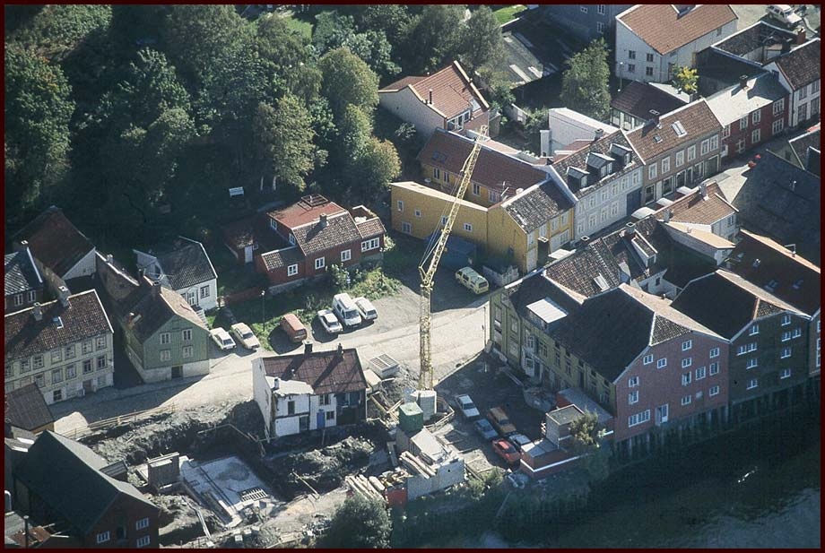
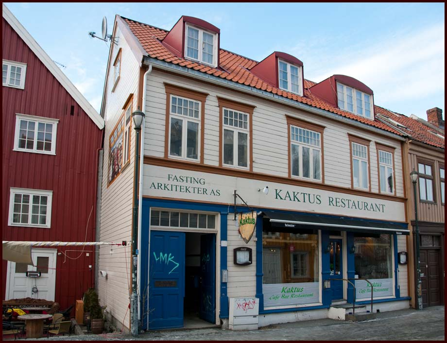
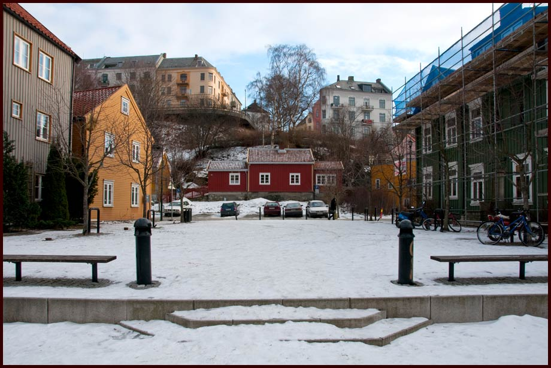
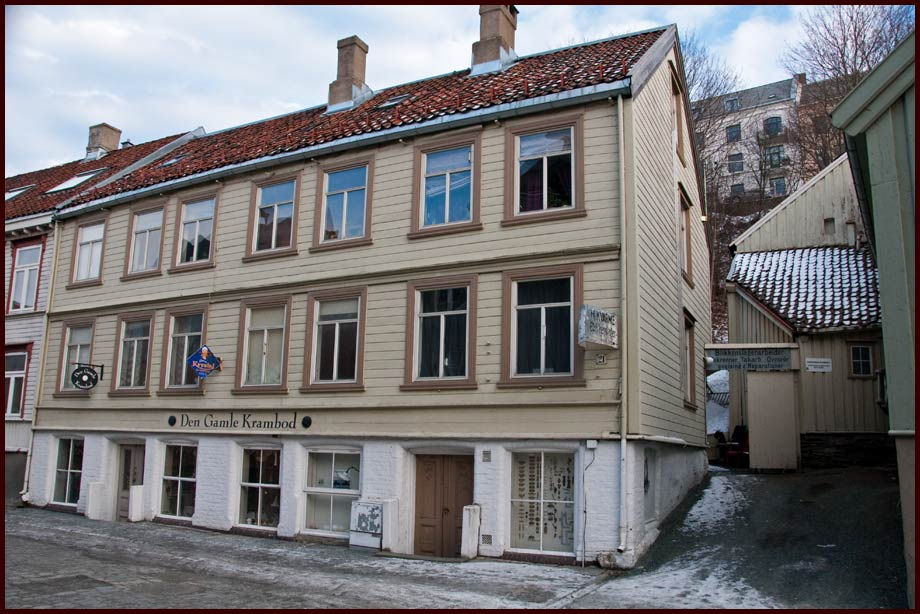
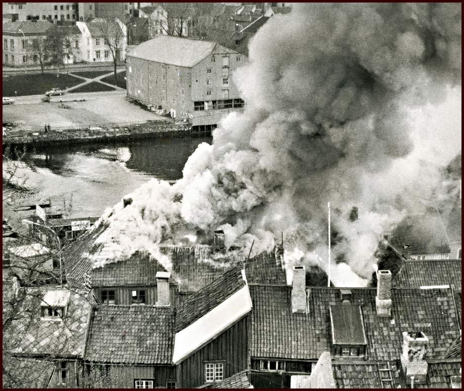

Nedre Bakklandet 1-25
Nedre Bakklandet strekker seg fra Bakke Bru "til Den Gamle Bybro". Eller aller helst er det vel motsatt. Nummer 1 og 2 ligger ved Gamle Bybro, og de høyeste numrene ligger ved Bakke Bru. Over finner du en meny med husnummer, som skal guide deg til riktig hus. Du kan selvfølgelig også bare rulle nedover siden. Husnumrene 26-50 eller 51-85 er også et valg på menyen over.
This site is about Bakklandet in Trondheim, Norway. All text in norwegian, but the pictures are in english.
Nedre Bakklandet og Port Arthur (Foto: EspeN-ikon ®)
Nedre Bakklandet 1
Nedre Bakklandet 1 også kalt Kolberggården (Foto: EspeN-ikon ©)
Koblinger: www.adamogeva.no Adam & Eva på Facebook Bilder fra Trondheim Folkebibliotek
Fra østenden av bybrua kan ser vi Brubakken, og Nedre Bakklandet 1 og 2 til venstre. Nedre Bakklandet 2 huser en "Frukt og Tobakk" og Storvask. I Bakklandet 1 er Karl Kolbergs Kolonial. Bildet er tatt rundt 1.verdenskrig.(Foto: Anders Beer Wilse) Kilde Norsk Folkemuseum
I følge Torunn Trædal, er jenta til høyre i bildet Brit Stokkstad, senere Brit Krag. Hun er født i 1924 og er vel 10-12 år på dette bildet.
Kolberggården 1890 - Iversens kolonial har tilhold i butikklokalet. (Foto: ukjent)
Kolberggården, har fått navnet fra innehaveren av kolonialbutikken, Karl Kolberg, og er en av flere eiendommer som har en bykjent profil på Bakklandet. Eiendommen stikker seg frem, uansett hvorfra man kommer: Fra Øvre Bakklandet, fra Gamle Bybro, fra Nedre Bakklandet eller ned Brubakken.
I butikklokalet i første etasje, var det kolonial fra første stund og helt til 1977. Deretter har det vært diverse butikktyper i lokalene: Myntforretning, garnbutikk, kiosk og kunstsalg/galleri, interiørbutikk og fra 1. desember 2008: Frisørkjeden Adam og Eva. På fotogalleri-siden ser man foto av bygningen fra ca. 1890, der handelsmann Iversen har tilhold. Fra ca 1930 er det et foto av bygningen, der Karl Kolberg har butikkskiltet over inngangsdøra. Dette skiltet er fortsatt liv laga, og henger nå inne i portrommet. På motsatt side, skrå over gatekrysset der 7-Eleven har etablert seg, hadde hans bror Albert, kolonialbutikk.
I "gamle dager", den gang hestene rådde gatene, og lokomotivene gikk på damp, var det også hestestall inne i gårdsrommet. Under ombygginger på 80-tallet, ble det funnet rester etter denne stallen. Gulvet hadde etter hvert fått tre plankelag, etter som hesten(e) slet gulvet ned. Disse plankene var det nesten umulig å benytte som ved. Det måtte skikkelig fyr i ovnen for at dette skulle brenne, så impregnert som disse plankene ble etter hvert. I bakgården var det lager for kolonialdriften. Det eneste som kan minne om dette i dag, er etterligning av dørene på veggen i andre etasje, over den tidligere minibanken. Lastekroken er fortsatt på plass, og er original, også i selve festet.
Over hovedporten hadde "drengen" sitt eget rom. Det var et lite rom med en liten vedovn. Skorsteinen ble fjernet for mange år siden, men fortsatt står restene oppe på loftet. Rommet ved siden av var soverommet for handelsfolket. Fiiinstue var det også, og den var lokalisert til hjørnet, hadde tre vinduer ut mot gata, og dobbel dør inn til dagligstua. Dagligstua hadde dør ut til entreen, i tillegg til dør inn til "tjenestejenta", som hadde værelse mellom stua og kjøkkenet. Det var også dør mellom dette rommet og kjøkkenet. For at hun ikke skulle bedrive "usedeligheter" nattes tid, var det montert et ovalt vindu i døra mellom hennes rom og kjøkkenet. Det var gardin foran dette vinduet, men den var anbrakt på kjøkkenet. Mellom kjøkkenet og bakgården, var det en smal åpen gang. Denne ble gjenbygget for mange år siden, og som grunnet utelukkende plank og ingen isolasjon fungerte kun som sommerværelse. Rommet er også benevnt som "Toragangen", etter en dame med navn Tora leide dette rommet en tid. "Gangen" ble helt ombygget i 1989 og fungerer i dag som bad/toalett og er ytterligere oppgradert i denne utleieforbindelse. Kilde: Kolberggaarden.com
↑ Til toppenNedre Bakklandet 2
Nedre Bakklandet 2 (Foto: EspeN-ikon ©)
Koblinger: Studentkatalogen Mix Bybroen Mix Bybroen på Facebook
Mix Bybroen AS preger fasaden på dette bygget, og er leitaker i front av første etasje. Brando AS holder også til her, og er de som står bak kleskjedene Jack & Jones, Selected & Exit.
JØRGEN RØDLI i 1997 om Nedre Bakklandet 2: I dag er bryggen under eie av Industribeslag Norge AS, og bryggen inneholder 3 leiligheter og 4 næringslokaler. Det anbefales å ta en kikk innom bakeriet på hjørnet av gården, for der får du kjøpt ferske bakervarer fra morgen til kveld. Det er blitt ett eget lite samfunn på Bakklandet, og det bare vokser med tiden. En herlig plass og bo.
Nedre Bakklandet 2 er en av de eldste bryggene på Bakklandet. Nedre Bakklandet 2 var under eie av Trondheim kommune ved århundreskiftet, og ble benyttet som tollkontor. Grunnen til at den ble benyttet som tollkontor, var at det var kun over gamle bybro man kom seg inn til sentrum, slik at de som kom fra innherred måtte stoppe for å tolle inn varene de skulle ta med seg inn til sentrum. Det var også bygget et utkikkstårn som stod midt ut i elva, slik at de kunne passe på at ingen tok seg over ulovelig med varer.
KILDE: → Trondheim Folkebibliotek
Eierforhold på Nedre Bakklandet 2. pr. februar 2013: Jørgen Rødli i Industribeslag solgte brygga til Lars Lian (Choco Bocco og jordbærpikene). Han vidersolgte den til Angen som har kontorene sine der. (Brando etc.) (Kilde Terje E. Eid)
Innsendt av Jostein Myklebust (uten ansvar for mulige feil) :
Kiosken til SOFFI, og avlange rundstykker i Nedre Bakklandet 2: Dette er en ganske stor eiendom, og innehadde faktisk 4 forskjellige forretningskonsepter først på 60-tallet. Helt til venstre kan man på bildet se en dør, helt til venstre, og en todørs port til høyre ved siden av. Døren var tidligere et butikkvindu for et fiskeutsalg, og dagens doble port var en enkel dør inn til lokalet. Navnet på fiskeutsalget husker jeg ikke.
På hjørnet var ”Bybroens Frukt - tobakk”. Dette skiltet er fra 1970-tallet. Eieren på 60-tallet het Sofie Fredriksen. Ei lita, og etter min mening, koselig dame, som frøs på føttene hver vinter, for der var det steingulv rett på bakken. Vi gutta i Brubakken kalte butikken ”Soffi”. Skulle vi kjøpe snop, var spørsmålet: skal vi dra på ”Soffi” eller ”Firkant’n”. ”Firkant’n” var ”Soffis” konkurrent på toppen av Brubakken. En liten firkantet kiosk hvor man fortsatt kan se tuftene av grunnmuren. Slik som nå, var det også den gang dobbeldør. Da kolonialbutikken Strøm & Co i Nedre Bakklandet 1 begynte å selge aviser og ukeblader, ble ikke dette spesielt godt mottatt av ”Soffi”. Dette var utidig forretningskonkurranse.
Ved siden av, til høyre, kan man se en dør som var inngangen til ”Melkutsalget”. De utvidet etter hvert med brød fra Trondheim Kommunale bakeri, som hadde bakeriet i Brattørgata. Her kjøpte vi gode ”rundstykker”, som jeg ikke på noen måte kunne forstå kunne kalles ”rundstykker”. De var jo avlange.
Lengre bort til høyre, holdt skredder Mortensen til. Han var Adventist, og min gamle far hadde daglige samtaler (les ”krangel”) om kristendom og dess like."
Dromedar Blog
Stella Snella Blog
Bilder fra Tr.h. Folkebibliotek
Stella Snella har lagt ned butikken, men ser ut til å være i live allikevel... Innsendt av Jostein Myklebust (uten ansvar for mulige feil) : Hvem bodde her for 100 år siden? Beboere ved folketelling 1910:
Innsendt av Jostein Myklebust (uten ansvar for mulige feil) : Innsendt av Jostein Myklebust (uten ansvar for mulige feil) : Innsendt av Jostein Myklebust (uten ansvar for mulige feil) : Innsendt av Jostein Myklebust (uten ansvar for mulige feil) : "Sukker" holder til i denne bygningen. Sukker er en forening som består av designere og formgivere, de fleste med utdannelse og jobb innenfor klesdesign, illustrasjon, grafisk design, keramikk, industridesign, smykkedesign og lignende.
Innsendt av Jostein Myklebust (uten ansvar for mulige feil) : KRANA
"Krana" er et gammelt navn, etter mastekranen som fantes på skipsverftet som lå her. På slutten av 1600-tallet ble det anlagt en brabenk (kjølhalingsslipp ) for vedlikehold av skip på Bakklandet.
Litt etter 1700 tok flommen hele anlegget og loskaptein Jan Wessel d.y. fikk i 1717 privilegium på å opprette et nytt verft, som skulle ha enerett på brabenkdrift i byen. Privilegiet ble 1720 overtatt av borgermester Hans Hagerup, som i 1724 også fikk privilegium på å bygge en mastekran. Denne kranen gav navn til Hagerups verft og senere til området som ble til den nåværende allmenningen. 1753 kjøpte rådstueskriver Henrik Bech området. Familien Bech lot anlegget forfalle og det ble 1780 solgt til Trondhjems Skibsværft.
Eierne av dette verftet hadde tidligere søkt om at kranprivilegiet måtte oppheves. Verftet ble nedlagt på slutten av 1700-tallet og det ble da bygd en kran for tyngre gods på mastekranens plass. Krana var på 1700-tallet regnet som en av byens severdigheter.
Allmenningen ble i begynnelsen av 1990-årene delvis igjenbygd med moderne boliger i bryggestil. I elveforbygningen mot Nidelva er det bevart en stor fortøyningsring for båter. Her holdt i 1990-årene Cafe Ka Faan til. Kafeen drev uten bevilgning, men var et anarkistisk tiltak som ble tolerert.
(Kilde Trondheim Byleksikon)
KRANA ALLMENNING
Når: 2001 Størrelse: ca 800 m2 Landskapsarkitekt: Trondheim byteknikk
Prosjektering av ny bydelsplass/almenning, rehabilitering av forhager, parkeringsplass
ved Nedre Bakklandet og kaifront med ny trebrygge.
Design av benker, granittelement inntil stolper i kaikant og granittelement som sokkel for gammelt anker.
Hovedprosjektering med utarbeiding av anbudsmateriale. Utført som innleid konsulent for Utbyggingskontoret (nå kalt Trondheim byteknikk), Trondheim kommune. I samarbeid med prosjektleder land.ark. Brit S. Johnsen
Kilde: www.wlark.no/Byrom og plasser
 Kilde: Trondheim Folkebibliotek (Klikk her)
I dag er det trafokiosk og innkjøring til garasjeanlegget der husene sto. Allerede i 1936 ble husene revet.
Bildet er hentet fra Trondheim Byarkiv's Flickr-sider. Klikk her Flotte bygninger som vi gjerne skulle sett hadde stått der fremdeles, og dannet en helhet på det hjørnet. På bildet kan vi se et skilt. Der står det "O.K.Dischler - Trædreier".
↑ Til toppen
Bildet er tatt tidlig på 90-tallet, før byggingen av det moderne boligkomplekset i bryggestil, som ligger mot elva. (se 12a). Kommunens haste-riving av bryggene Nedre Bakklandet 14 og 16, i 1972, gjorde området attraktivt for utbyggere. Beboere i det nye komplekset irriterte seg over å få fremmede inn i sin "hage" mot Nidelva, og bygde derfor gjerder, for å få være i fred. Gjerdene ble begjært fjernet, og det ble slått fast at området mot elva skulle være offentlig tilgjengelig, og en del av Krana allmenning.
Se nedre Bakklandet 11 -> 11
Se Nedre Bakklandet 16 -> 16
Det kan virke som om rivingsiveren var større i den kommunale administrasjonen
enn blant kommunens politikere. Skal man legge innleggene i Adresseavisen
til grunn for en vurdering av hvordan innbyggerene i kommunen så på Bakklandet
sin framtid, var det stor oppslutning om vernetanken. Velforeininga var aktiv og arrangerte
støttekonsert for vern av Bakklandet (Adresseavisen 1977.05.13b). Inntektene
gikk til oppussing av okkuperte hus. Det ble arrangert underskriftskampanjer
og velforeininga arrangerte også gatefester og "Bakklandskveld" som medvirket til
å styrke det sosiale miljøet og samholdet på Bakklandet.
Trondheim kommune virket i mange av disse rivingssakene arrogant og ignorant
overfor verneinteressene og innbyggerene i bydelen. Den 10. mai 1972 vedtok
bygningsrådet riving av Nedre Bakklandet 16, men velforeininga klaget til Fylkesmannen
på vedtaket. I møte 5. juli vedtok bygningsrådet å se bort fra anken da "en
del av bebyggelsen er alt revet". Den 6. oktober skrev Fylkesmannen at han ikke
fann noen grunn til å ta standpunkt til klagen "siden en har fått opplyst at bebyggelsen
på Nedre Bakklandet 16 ble revet i løpet av juli måned i år." (Sinding-Larsen
1974.05.24).
Kilde: Trebyen Trondheim - Dag Kittang
Nedre Bakklandet 17a er det gule huset, som er kjent som "Kokhuset". 17B er et nyere tilbygg i modere utforming, og skimtes øverst til venstre.
– Kokhuset med 35 kvm grunnflate er bygget i flere etapper og over flere tidsepoker. De eldste daterbare bygningsdelene tyder på at huset ble reist rundt 1800. En mer eksakt datering er ikke mulig å gjøre før vi har studert branntakstene grundigere, sier Mette Bye.
Hun var fylkesantikvar i Sør-Trøndelag da hun i 2003 kjøpte Kokhuset. sammen med sin mann, arkitekt August J. Schmidt. Prosjektet deres involverte også restaurering av en sidebygning fra 1850, og bygging av et moderne tilbygg like bak de gamle trehusene.
Kokhuset med sin portal i empire/louis Seize-stil tiltrekker seg mye oppmerksomhet. - Det ligner litt på en barnetegning, og alt er litt overdrevent i proporsjonene, kommenterer beboer og bygningsantikvar Mette Bye. I bakgården skimtes bindingsverkshuset fra 1850 og det moderne tilbygget
Kilde: www.klikk.no/bolig/bonytt
Reportasje Bonytt
Reportasje Norsk Kuturminnefond
Denne gården ble kalt Løpen-gården. Her bodde det ei dame med etternavnet Løpen. Jeg mener å kunne huske å se henne til utpå 90-tallet.
Bakklandet 20d og 20c Preger nå denne bygningen. A og b er ganske anonyme. I 20 d er det nå Anna's Cafe som har kommet godt i gang med driften. Det er trivelig å registrere at det alltid er bra med gjester der.
Nedre Bakklandet 20 som det så ut i februar 2011. Denne bygningen har lenge hatt utleie for butikdrift i første etasje. Ulike forretninger har prøvd seg her opp gjennom årene, med vekslende hell. Bygnningen er delt opp i flere adresser: 20a, 20b, 20c og 20d.
I 20a og b, a helt til venstre, var det i mange år "Tanta te Beate" som holdt hus. → Tanta te Beate's hjemmeside
I 20c finner vi "Pryd" - et designkollektivet for klesdesign. → Pryd's hjemmeside
I 20d holdt "Krussedull" til, men har nå flyttet til Nonnegata. → Krusssedull's hjemmeside
I nedre Bakklandet 21 har det vært lange tradisjoner for Næringsvirksomhet. Blikkenslager Kvarme....
Blikkenslager Kvarme var kjent på Bakklandet, og i bakgården var det ei spåkone. Der kunne du komme med
kaffekoppen din med grut i, og få din framtid spådd for en billig penge! (Kilde Sytti Plus / Haldis Isachsen)
I dag finner vi "Den Gamle Krambod" i byggets kjelleretasje. Den Gamle Krambod tilbyr beslag og andre bygningsdeler, som kan være vanskelig å få tak i andre steder. Åpningstiden i butikken er begrenset til Onsdager mellom 16 og 19, men nettbutikken har døgnåpent. →Den Gamle Krambod's nettsted
Hermetikkfabrikken A/S Konserv ble grunnlagt i 1914 av H. M. Hansen. Fabrikken hadde lokaler i Nedre Bakklandet 22-25 i Trondheim. Produksjonen bestod av kjøtt- og fiskehermetikk, samt hermetiserte frukter og bær. Bedriften leverte hermetikk til handels- og hvalfangstflåten og dessuten kjøttsuppe til Trondheimsskolene. Produksjonen kunne komme opp i 1,3 mill. bokser per år og bedriften sysselsatte på det meste 90 personer. Bedriften ble nedlagt i 1972. Kilde: Terje Bratsberg, Trondheim byleksikon
Koenallmenningen ligger mellom Nedre Bakklandet 22 og Nygata 2. Oppkalt etter Koengården som er Nedre Bakklandet 22.
→Norge Rundt på besøk hos Gjørtler Ramberg i oktober 2000
→Under duskens reportasje om Gjørtler Ramberg 2010
→Gyldendals video om Stephan Ramberg Sunde
JOHS OSMO's BAGERI & CONDITORI i Nedre bakklandet 24.
Nedre Bakklandet 2 i 1981. (Kilde Jostein Myklebust)
"Jeg er ikke sikker på om denne bygningen alltid har vært grønn. Muligens har den vært grå, men jeg vil ikke påstå det. På et bilde fra aksjonen for ”stenging av Bakklandet som gjennomfartsåre”, i 1981, er den grå, men det kan være fordi tidligere grønnmaling er helt avslitt.
Nedre Bakklandet 3
Nedre Bakklandet 3 (Foto: EspeN-ikon ©;)
I 2011 flyttet Nidelvens Lille Galleri inn i lokalene. -> Nidelvens Lille galleri på Facebook
"I min barndom, på 60-tallet, var dette en anonym gård, så der har jeg ingen større minner enn en bromhandler Reppe, som syklet rundt på en gammel viserguttsykkel og samlet metall."

Folketellingen 1910 Nedre Bakklandet 3 Kilde: da.digitalarkivet.no
Nedre Bakklandet 4
Nedre Bakklandet 4 (Foto: EspeN-ikon ©)
"Jeg husker jeg ikke så mye fra denne gården, men før Ernst opprettet puben Rabarbra, som var internettkaffe i starten, var det fiskeutsalg også her, lenge etter at fiskeutsalget i nr. 2 var nedlagt."
Nedre Bakklandet 5
Nedre Bakklandet 5 (Foto: EspeN-ikon ©;)
Denne eiendommen ble kalt ”Kjølås-gården”. Her var det ei dame, med etternavnet Kjølås, som drev butikk med gardiner, stoffer og tråd. Inngangen var døra nærmest porten, og hun hadde de tre vinduene som utstillingsvinduer. Innenfor vinduet og døra til venstre, var det en liten kiosk, drevet av en eldre mann med navnet Veum. Han bodde i veita over Gamle Bybro, nåværende Kannikestredet. Vi kunne se ham rusle over brua på ettermiddagstid. Krumbøyd og lutrygget med hendene på ryggen, og i dem en liten veske som dinglet som en klokkependel, frem og tilbake. Lengre tilbake har det vært tilholdssted for kafé Iris.
På 60-tallet ble el-firmaet Ingebrigtsen etablert. De solgte diverse elektrisk utstyr, og hadde også el-installasjon som geskjeft. (Usikker informasjon i parentes: Etter at denne bedriften ble avviklet, ble det etablert en forretning med bruktutstyr. Dette interesserte jeg meg for midt under hælen, så her er jeg såpass usikker, at kanskje andre bør bekrefte....) Det eneste jeg med full sikkerhet husker, er at innehaveren var svært så enig i at kommunen skulle opparbeide en såkalt ”lekeplass” i gårdsrommet som egentlig er Brubakken 12. Altså arealet som har inngang i mellom Brubakken 10 og Nedre Bakklandet 1.
Nedre Bakklandet 6

Nedre Bakklandet 6 (Foto: EspeN-ikon ©;)
"Først på 60-tallet var det Samvirkelaget som holdt til her. Etter det har det vært Bok-Cafe og to-tre restauranter før Kaktus, bl.a. Grønn Pepper."
Nedre Bakklandet 7
Nedre Bakklandet 7 (Foto: EspeN-ikon ©;)
Vangsmogården.
Her bodde det et par som vi guttene syntes var svært så noble. Det var aldri mulig å få innpass hos dem, for dette var en av gårdene som ble holdt i hevd. Den så alltid pen og velstelt ut, så ergo var Vangsmo av ”edel art”. I murgårdsbygningen i bakgården, var det fryseri. Det var den gang frysebokser ikke var allemannseie.
Nedre Bakklandet 8
Nedre Bakklandet 8 (Foto: EspeN-ikon ©)
Nedre Bakklandet 9
Nedre Bakklandet 9 (Foto: EspeN-ikon ©;)
Les mer på Sukker, egne sider: → Sukker's Facebookside Sukker's hjemmeside: → Sukkerdesign
Nedre Bakklandet 9, til høyre i bildet. 7.august 1938 (Foto: Wilse, Christianaia) Kilde: DKNVSB Trondheim, arkivnr. w8372F
Nedre Bakklandet 10
Nedre Bakklandet 10 (Foto: EspeN-ikon ©;)
"Her var det et snekkerfirma som holdt til, og den høye skorsteinen spydde ut mørk grå røyk, både titt og ofte. Ja, såpass mye at hele området var dekket med røyk, og man kunne frykte at det var brann i området."
Nedre Bakklandet - Krana

Nedre Bakklandet - Krana Almenning 2010 (Foto: EspeN-ikon ©;)
Krana sett fra lufta i 1993, før bygging av det nye boligkomplekset Nedre Bakklandet 12a: (Bildet er tatt av Henning Meyer)
Nedre Bakklandet 11 og 13
Nedre Bakklandet 11-13 (Foto: EspeN-ikon ©;)
Tomtegrenser - Nedre Bakklandet 11-13
Nedre Bakklandet 11 og 13 ble revet i 1936 (Foto: Ukjent)
Nedre Bakklandet 12a
Nedre Bakklandet 12a, fra elvesiden (Foto: EspeN-ikon ©;)
Nedre Bakklandet 12a, inngangsparti (Foto: EspeN-ikon ©;)
Nedre Bakklandet 12b
Nedre Bakklandet 12b (Foto: EspeN-ikon ©;)
Nedre Bakklandet 12

Nedre Bakklandet 12 tidlig på 90-tallet. Bildet er fr Kurt Sandaunets private samling. (Foto: Bert Erik Matson;)
Nedre Bakklandet 13
Nedre Bakklandet 14
Nedre Bakklandet 15
Nedre Bakklandet 15 (Foto: EspeN-ikon ©;)
Nedre Bakklandet 16
Nedre Bakklandet 14 og 16 - De hvite lave husene til høyre i bildet. (Ukjent fotograf, ukjent årstall Kilde: Trondheim Byarkiv)
Nedre Bakklandet 17 "Kokhuset"
Nedre Bakklandet 17a og 17b (Foto: EspeN-ikon ©;)
Nedre Bakklandet 17 - Kokhuset (Foto: Ukjent)
Nedre Bakklandet 18a og 18b
Nedre Bakklandet 18a og 18b (Foto: EspeN-ikon ©;)
Nedre Bakklandet 18a og 18b sett fra elvesiden (Foto: EspeN-ikon ©;)
Nedre Bakklandet 18a baksiden, og 18b inngangsparti (Foto: EspeN-ikon ©;)
Nedre Bakklandet 19
Nedre Bakklandet 19 (Foto: EspeN-ikon ©;)
Nedre Bakklandet 20
Nedre Bakklandet 20 desember 2012 (Foto: EspeN-ikon ©;)
→ Anna's Cafe sin Facebookside
I 20C er det designerkollektivet "Pryd" som gleder oss med stadig nye saker.
"Pryd" er et designkollektivet for klesdesign.
→ Pryd's hjemmeside
Anna's berømte kanelboller!(Foto: EspeN-ikon ©;)
Nedre Bakklandet 20, februar 2011 (Foto: EspeN-ikon ©;)
Nedre Bakklandet 21

Nedre Bakklandet 21 (Foto: EspeN-ikon ©;)
Nedre Bakklandet 21b
Nedre Bakklandet 21b ligger bak nr. 21, og er ikke synelige fra gata. Mars 2012 (Foto: EspeN-ikon ©;)
Nedre Bakklandet 22
Nedre Bakklandet 22, ligger på baksiden av nummer 20, mot Nidelva. (Foto: EspeN-ikon ©) Januar 2012
Brann på Nedre Bakklandet den 21. august 1961. (Fotograf: Schrøder.) Fra Trondheim Brannvesens arkiv. Kilde: Trondheim Byarkiv
Koenallmenningen
I midten av 1800-tallet hadde fru Andresen kommunal bevilling
på fløtmannstrafikken. Frå 1870 til Nybroen blev ferdig omkring 1886 innehadde skipper Johs. Fjærem samme. I eldre tider la fløtmannsstasjon på Ørens Verksteds nuværende tomt, og man landet
på andre siden straks nedenfor den gamle tollbod. I sekstiårene blev trafikken flyttet lengere op og
foregikk mellem Koenallmenningen på Baklandet og Mustallmenningen i byen.
Kilde: Den tusenaarige by ved Nidelven - O.J. Johansen.
Nedre Bakklandet 23
Nedre Bakklandet 23 - januar 2012 (Foto: EspeN-ikon ©)
Trondheimsrose fra Nidaros Metallvarevabrikk - (Gjørtler Ramberg) (Foto: Hentet fra fabrikkens hjemmeside ©;)
Nedre Bakklandet 24
Nedre Bakklandet 24a - januar 2012. En markant bygård som deler Nedre Bakklandet og Nygata. (Foto: EspeN-ikon ©)
Nedre Bakklandet 24b. er det gule bygget til høyre - januar 2012 (Foto: Espen F. Eid ©)
Johs. Osmo startet her i 1898 og flyttet i 1904/05 til Øvre Bakklandet 54. Det finnes et interiørbildet fra utsalget hos NTNU's billedarkiver - klikk her: OSMO's Bageri interiørbilde
Bildet viser en disk med kaker, brødfjøl, kniv og innpakningspapir. Bak disken er vareutvalget i hyller og skap og skuffer. En ovn til venstre og en reklameplakat for smør. Gasslampe.
Det var flere bakere ved navn Osmo i Trondheim: A. Osmo Bageri & Konditori drev i Prinsens gt. 28A mellom 1902/03 og 1907/08.
Bakklandet 24a / Nygata 1, er en Bygård fra 1700 - tallet. (Foto: Røske og Røstad) Kilde: Trondheim Byarkiv

Bakklandet 24 - Nygata 1 den 10. mai 1974. Bygård fra 1700 - tallet. Ukjent fotograf. Fra Trondheim brannvesens arkiv. Kilde: Trondheim Byarkiv
Nedre Bakklandet 25
Nedre Bakklandet 25 - januar 2012 (Foto: EspeN-ikon ©)
Tronhjems Adressebok 1925